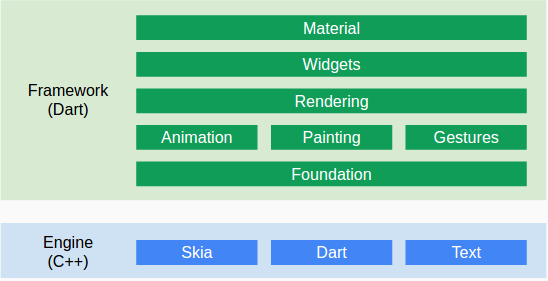
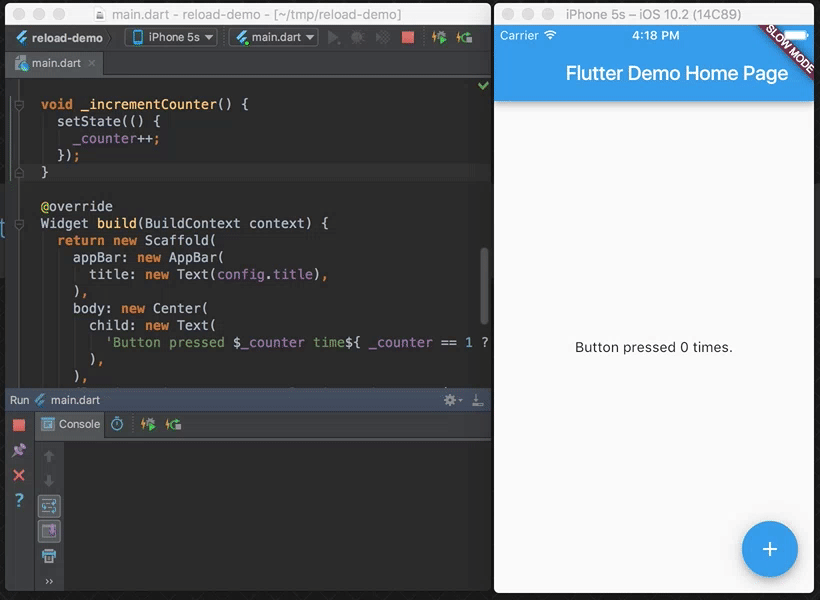
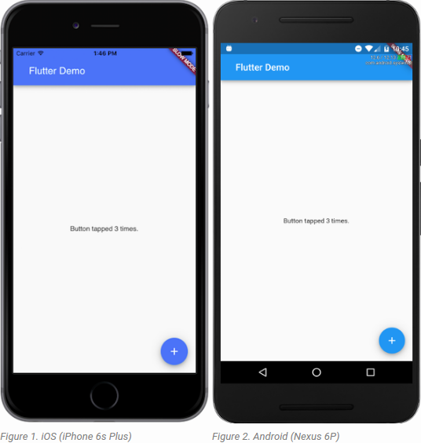

Flutter est un projet open source, encore à ses débuts et qui est développé en majorité par Google. Il lui est reconnu de donner aux développeurs « un moyen facile et productif pour créer et déployer des applications mobiles multiplateformes de haute performance, à la fois sur Android et iOS ».
Il n’utilise ni WebView ni les widgets OEM livrés avec les appareils. Il repose plutôt sur son propre moteur de rendu que ses développeurs estiment « de haute performance pour dessiner des widgets ».
Le projet est construit avec les langages C, C++ et Dart. Les développeurs du projet justifient le choix de Dart pour le framework par le fait que non seulement il supporte des scripts simples, mais encore il est facilement évolutif pour les applications riches en fonctionnalités. C’est aussi un langage familier pour les développeurs JavaScript, Java et C#, qui permet encore de répondre à la nécessité d’une exécution rapide sur iOS.
Flutter repose aussi sur le moteur de rendu 2D Skia, ainsi que sur le système de communication interprocessus de Mojo. À travers le système IPC de Mojo, Flutter permet aux développeurs d’accéder à tout service ou API fournis par le système d’exploitation hôte. De manière plus générale, ce système de communication interprocessus permet d’assurer la compatibilité entre le code de l’application Flutter et le système d’exploitation hôte.

Voici un code simple qui génère une application de test de clic, testé sur Iphone.

La force de Flutter réside dans le fait qu'à partir d'un seul et même code, une application pourra être générée pour les plateformes IOS et une autre pour les appareils Android.

Flutter peut être utilisé à l’intérieur des applications natives Android et iOS existantes, et les applications développées peuvent être déployées via Apple App Store ou Google Play Store.
Sur Android, le code C/C++ est compilé avec le kit de développement natif (NDK) Android. La machine virtuelle Dart, sur laquelle la majorité du code du framework et de l’application est exécuté, génère alors un code natif compilé à la volée. Sur iOS, le code est traduit en code natif avec LLVM par compilation anticipée.
Les applications Flutter tournent sous Android Jelly Bean 4.1.x et iOS 5, ainsi que les versions plus récentes des deux systèmes. Une variété de tablettes et téléphones de différentes gammes sont actuellement testés afin de garantir une compatibilité avec les appareils. Ces applications peuvent être développées sur Linux et Mac. Un support pour Windows est également prévu.